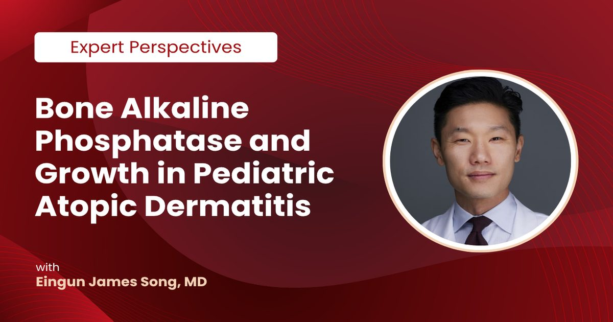

Щелочная фосфатаза и рост при атопическом дерматите у детей: разбор данных
Доктор Джеймс Сонг проанализировал данные исследований дупилумаба и объяснил, как атопический дерматит влияет на костной рост детей. Ключевую роль играют воспаление, качество сна и питание, а не только наружная терапия. Понимание этих связей помогает вовремя скорректировать стратегию ухода.
Биомаркер костного роста: что показывает щелочная фосфатаза
Щелочная фосфатаза костной фракции синтезируется остеобластами и служит индикатором активности костообразования и минерализации в растущем организме. В педиатрической практике уровень этого фермента коррелирует с темпом удлинения скелета, поэтому значения в верхней половине референсного интервала считаются физиологически выгодными. В клинических испытаниях дупилумаба дети, получавшие активное лечение, демонстрировали численно более высокие показатели биомаркера по сравнению с группой плацебо, результаты которой сосредоточились у нижней границы нормы.
Изолированно один анализ не ставит диагноз, однако в сочетании с антропометрией вырисовывается устойчивая тенденция к восстановлению темпа роста у пациентов, изначально отстающих от кривых ниже сорокового процентиля. Это свидетельствует о системном эффекте контроля воспаления кожи, выходящем за пределы дерматологических симптомов. Для специалистов по уходу и родителей это аргумент включить мониторинг роста и биомаркеров костного обмена в стандарт наблюдения при атопическом дерматите.

Четыре фактора, сдерживающие развитие ребенка
Эксперт выделяет ключевую четверку драйверов замедления роста: хроническое системное воспаление, дефицит сна из-за ночного зуда, влияние глюкокортикостероидов и ограничительные диеты, вводимые родителями без строгих аллергологических показаний. Сонг подчеркивает, что при атопическом дерматите эти факторы не действуют изолированно, а формируют замкнутый цикл, где ухудшение одного параметра усиливает негативное влияние остальных. Статистическая коррекция по приему наружных стероидов не устранила преимущество группы на дупилумабе, что указывает на недостаточность объяснения только медикаментозным воздействием.
Дополнительно дети в исследованиях имели рост ниже среднего, но вес и индекс массы тела — в верхней части нормы, что исключает чистое истощение как единственную причину. В контексте ухода за кожей это означает, что агрессивные исключающие диеты без подтвержденной аллергии лишают растущий организм кальция, витамина D и белка — критичных для минерализации скелета. Консультация с диетологом и аллергологом перед устранением групп продуктов становится обязательным элементом комплексной стратегии поддержки роста.

Роль сна и воспаления в механизме роста
Особое внимание Сонг уделяет потере сна как потенциально самому релевантному драйверу: ночной зуд фрагментирует архитектуру сна, ограничивая пульсарную секрецию гормона роста, который через инсулиноподобный фактор роста-1 стимулирует пролиферацию хондроцистов в зонах роста. Хроническое недосыпание таким образом напрямую тормозит линейный рост даже при адекватном питании и отсутствии тяжелых системных патологий.
Влияние интерлейкинов-4 и -13 на функцию остеобластов эксперт называет более теоретическим, но включает хроническое воспаление в список основных факторов, сдвигающих баланс ремоделирования в сторону резорбции. Для практики ухода за чувствительной кожей это переводит снижение зуда и восстановление режима сна из разряда комфортных мер в категорию инвестиций в скелетное развитие. Ежевечерние эмолленты, микроклимат спальни и ритуалы отхода ко сну работают в синергии с системной терапией, формируя гормональную среду, благоприятную для роста.
Окно возможностей и выбор терапевтической стратегии
Сонг формулирует принцип: чем моложе ребенок и сильнее он отклоняется от генетически обусловленного коридора роста, тем уже временное окно для эффективного вмешательства. У подростков без тяжелого течения рост теряет приоритетность, тогда как у дошкольников с выраженным фенотипом задачей становится максимально ранний старт безопасной системной терапии. На данный момент единственным системным препаратом, одобренным для умеренного и тяжелого течения до двенадцати лет, остается дупилумаб.
Фототерапия часто требует длительных курсов и сложна для логистики семьи, а наружные средства не всегда обеспечивают контроль зуда, необходимый для качественного сна. Если пациент реально сходит с процентилей роста, врач приоритизирует наиболее мощные инструменты, понимая: задержка может стоить невосполнимого роста после закрытия эпифизарных зон. Партнерство дерматолога, педиатра и родителей с регулярным мониторингом раз в три-шесть месяцев создает условия, при которых кожа заживает, а скелет развивается по плану.
Коротко: Атопический дерматит — системное состояние, замедляющее костной рост через воспаление, сон и питание. Мониторинг щелочной фосфатазы и антропометрии позволяет вовремя заметить задержку. Своевременная системная терапия при тяжелом течении сохраняет генетический потенциал роста ребенка.
Какие анализы и замеры роста вы обсуждали с врачом при атопическом дерматите ребенка?